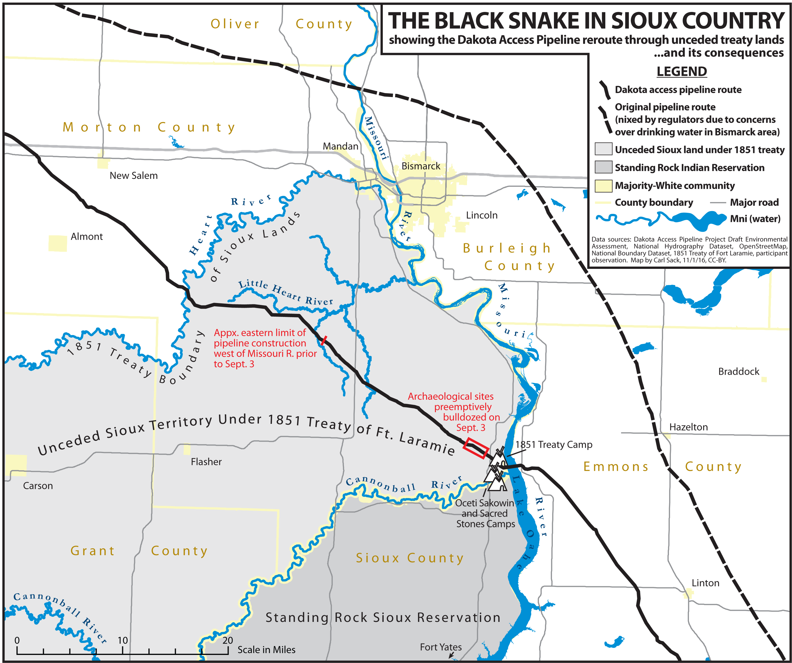

- Sun 06 November 2016
- Posts
- Ryan Horne
- #nodapl, #gephi, #social-networks, #twitter
Introduction:

The approximately 1,172 mile Dakota Access Pipeline1 has been highly controversial since its public unveiling in 2014.2 The Standing Rock Sioux and allied organizations took ultimately unsuccessful legal action to stop construction of the project, 3 while youth from the reservation began a social media campaign which gradually morphed into a larger movement with dozens of associated hashtags.4 I performed network analysis on #NODAPL, the most prominent of these hashtags on Twitter, between October 22 - 30, 2016. This revealed some interesting trends in the data, including the key role of alternative media, celebrities, and seemingly random twitter users holding the network together. Another surprising finding was the relatively minor role that republican candidate Donald Trump's twitter account plays in the #NODAPL conversation, especially compared to the accounts of Barack Obama, Hilary Clinton, Bernie Sanders, and Dr. Jill Stein.
Preliminary Network Analysis:
Due to restrictions from the Twitter API and crashes / limitations from the software (see below), I do not have complete access to all Tweet traffic involving #NODAPL.5 I used the Twitter Archiving Google Sheet (TAGS) 6.16 to capture tweets that featured #NODAPL somewhere the tweet text. The resulting sheets were then imported into a database, then exported into an edges table for use in Gephi. For technical details, see the “Detailed Procedure” section below.
Basic to any network analysis is the concept of nodes and edges. Nodes can represent people, places, things, ideas, etc – they are entities on the graph. In this case, nodes are twitter users and hashtags. Edges associate nodes in some manner; they can represent friendship, biological relationships, enmity, or anything else that links two nodes. For my analysis, edges are anytime a user includes a user name or hashtag in a tweet. For example, one of the most prominent users in this study, @RUTHHHOPKINS is represented as a node, with an edge created to the node #NODAPL every time she uses the hashtag in a tweet, like the example below:
Chief Arvol Looking Horse and riders coming into camp #NoDAPL pic.twitter.com/2KwR7fYjQn
— Ruth H. Hopkins (Red Road Woman) (@Ruth_HHopkins) November 5, 2016
# NODAPL itself was excluded as a node in this analysis, as every tweet and user would be directly connected to it. This network features 133,702 nodes linked by 630,393 edges.7 I used Gephi to identify communities of nodes that are strongly linked together, which are represented by different colors in the network visualization.8 In addition, I ran some basic network statistics, including measuring the degree of nodes (the number of edges between two individuals, hashtags, or individuals and hashtags) on the graph. In these measurements out-degree indicates that a node initiates a link to another node in the graph, which in this case means another user name or hashtag was mentioned in a text by the node in question. in-degree measures incoming edges, which indicates that a particular node is the subject of a twitter conversation.
I first looked at the in-degree measurement. #STANDINGROCK was by far the node with the highest in-degree, indicating its popularity as a potential alternative hashtag to #NODAPL. @POTUS, the official twitter account of the President of the United States, was in second place, followed by #WATERISLIFE, @HILLARYCLINTON, @OFFICIALJADEN, @UR_NINJA, @SHAILENEWOODLEY, @MARKRUFFALO, and @RUTHHHOPKINS. In this list, only two nodes are not politicians, hashtags, or celebrities. @UR_Ninja is the official twitter account of Unicorn Riot9, a 501(c)3 nonprofit organization based in Minneapolis, Minnesota10 which has done extensive reporting on the Dakota Access Pipeline protests. @RUTHHHOPKINS is the twitter account of Ruth Hopkins, a Dakota/Lakota Sioux writer, journalist, and blogger. The high degree count on these nodes indicates that they may function as an information service, where their reporting on the situation is retweeted and mentioned by many other nodes in the network.
This measurement also revealed a marked difference between the in-degree and out-degree of nodes. The top 34 nodes by number of degrees are so dominated by in-degree connections that no node has an out-degree that contains more than 3.17% of its total edges. This reveals that such nodes are being “talked at”: they are mentioned in tweets, retweeted in large numbers, but by and large feature extremely limited further engagement with other Twitter users.
A particular user group is indicative of this trend. Few politicians have used Twitter to actively engage with activists or to contribute to the dialogue surrounding the #NoDAPL movement. In some cases this is not surprising; the official twitter account of the President of the United States can scarcely be expected to contribute extensively to dialogue on twitter. Despite being the seventh highest degree node and an occupation of her Brooklyn campaign headquarters on October 27, 201611 @HILLARYCLINTON, the official account of Hillary Clinton, has likewise not responded to #NoDAPL conversations on twitter. The official account of Bernie Sanders, @SENSANDERS, has also not extensively engaged with #NODAPL. However, on October 31, 2016, which is outside of the bounds of my data set, his account did issue a series of tweets in support of the # NODAPL movement.12
There are many reasons the Dakota Access Pipeline should be stopped. I want to call attention to a few of the biggest. #NoDAPL
— Bernie Sanders (@SenSanders) October 31, 2016
Another account of a politician, Dr. Jill Stein (@DRJILLSTEIN), is twelfth on in-degree, but only has five outwardly directed edges. Despite active involvement at the protests leading to charges of criminal trespass and criminal mischief,13 Dr. Stein's twitter account has barely engaged with other users, with the only mentions in this data set originating from a retweet that mentioned Hillary Clinton and Barack Obama.14 Interestingly, despite over 1,000 retweets (many of which were collected by this study), her tweet mentioning both Hillary Clinton and Donald Trump15 was not captured by the TAGS software.
Your silence is terrifying, @HillaryClinton and @realDonaldTrump. #NoDAPL https://t.co/JG1H5OrL7N
— Dr. Jill Stein🌻 (@DrJillStein) October 28, 2016
Perhaps surprisingly for a major party candidate, the twitter handle of Donald Trump, @REALDONALDTRUMP, is an outlier on this list: he ranks at 112,160 with only 933 total mentions. Trump's publicized investments and connections with the Dakota Access project16 and environmental positions, including discounting climate change,17 almost certainly makes him unlikely to be sympathetic, let alone an ally of the # NODAPL movement. Indeed, most of his mentions on the network are simply retweets of Dr. Jill Stein's criticism against Donald Trump and Hillary Clinton's lack of involvement in the pipeline issue.18
Drilling down further into the data, I next looked at the nodes with the highest out-degree, which represents nodes who mentioned other users and hashtags. There were some interesting variations from the trends of in-degree nodes. Three users, @DEANLEH, @CANATIVEOBT, and @WMN4SRVL had in-degree and out-degree measurements that were no more than 20% divergent from each other. However, this does not mean that these nodes are engaged in extensive online conversations. These accounts all feature extensive retweets and linkages to different causes often associated with the progressive movement, including climate change awareness, opposition to institutional racism, feminism, and anti-corporatism. All three of these accounts seem to perform a function similar to news aggregation, as the majority of their mentions are retweets from other sources and are not extensive discussions with other users.
Another useful statistics, betweenness, measures the number of shortest paths (connections between any two nodes on the graph that may involve any number of additional nodes) that pass through a specific node.19 Nodes with a high betweenness are “central” in that they play a critical role in connecting (and therefore moving information) through the network. The single node with the highest betweenness is @UR_NINJA, which combined with its high degree ranking, suggests that the news service plays a critical role in bringing together individuals on the graph who are interested in social justice / progressive issues. Four other nodes in the top 25 betweenness list are likewise in the top 25 nodes by degree.
The remaing nodes are somewhat surprising. The twitter profile for second highest betweenness node, @TNPMR has a limited online footprint outside of Twitter, and does not seem to be involved in a leadership capacity in a social movement or media organization. Another important node in this measurement, @AMAZONMILLER, only scores 1638th in total degrees, yet still retains an important place in the network structure. Looking further at this data, I next examined at each individual user's Twitter profile who scored in the top 25 for betweenness. I divided this list into people who seem to be primarily interested in progressive causes in general vs. those who expressed affinity for indigenous rights issues. The results were nearly evenly split, with a slight edge to the more general progressivists. However, only two of top ten nodes in the betweenness category focused primarily on indigenous issues, while the rest were concerned with progressivist issues more broadly. What this may indicate is that, as a whole, indigenous activists may face future difficulties in promoting their narrative outside of the more general progressive interests of the online community.
Further Observations:
These preliminary steps have also revealed some issues about data collection and curation. Twitter's REST and streaming APIs are woefully inadequate for examining the whole data set. While Twitter provides, in theory, a representative sample of the data set, one of the powers of social network analysis is the discovery of weak ties and other network structures which are by definition not representative of the network as a whole. This can be frustrating for academic study of the network, and extremely detrimental to movements that depend on social media to transmit their messages. Groups can look at their own twitter histories, but the larger network structure, along with crucial weak ties, may be invisible to them.
Although Twitter does provide mechanisms for obtaining the entire history of hashtag usage, the organic development of other hashtags which are not heavily watched from the beginning is almost certainly a cost-prohibitive proposition for social movements that are loosely organized, under-funded, and / or have limited computer infrastructure. It would be a significant benefit for such groups to gain access to the Twitter history of their movements, and be able to the evolution of the conversation on social media. As hashtag use can grow organically, with many different signifiers used for conversations, Twitter's current pricing structure and data access model puts these groups at a severe disadvantage and hinders the identification and cultivation of allied communities and supporters.
A less pressing, but nevertheless important, issue is access to Twitter's archive by researchers. Unlike print material or traditional media, which may be tedious to analyze but are fully (and for the most part cheaply) accessible to interested parties, the complete set of tweets on a topic are impossible to study without significant funding. Even if a researcher could guess all of the hashtags that could emerge from a dynamic topic, the Twitter streaming API does not provide all relevant tweets. Such limitations make it challenging to use Twitter data in a pedagogical setting. Some of my students have expressed interest in conducting similar projects, but the need for constant downstream connections and the high cost of historical tweets have made all but the most superficial studies impossible. There needs to be a more cost-effective means for projects operating on a limited budget, students, and other academic uses of Twitter's data.
Next Steps:
In addition to the data set on #NoDAPL featured here, I have also compiled a number of hashtags and data in separate TAGS sheets which can be combined to see more of the network. I am currently running a python script to grab more tweet data from the streaming API, which should provide more tweets. After placing this data in the network and performing some basic sentiment analysis, I want to see if distinct communities have formed around different hashtags, and if those communities have noticeably different rhetorical strategies that correspond to the inclusion of certain hashtags. A long term goal is to secure funding to obtain the complete twitter archive of #NODAPL and related hashtags in order to perform a full social network and sentiment analysis. In addition, I would like to examine the twitter history of @UR_Ninja and other alternative news organizations to see if their followers form recognizable activist communities. As part of this analysis, I am especially interested to see how these communities change when news organization shifts their focus between causes (like #FERGUSON to #NODAPL), and to examine the interactions of these virtual communities with different social movements.
To overcome the issues I discovered with TAGS and TwitterStreamingImporter, I am currently running a python script (modeled after http://adilmoujahid.com/posts/2014/07/twitter-analytics/) that pulls in the full json object from Twitter's streaming API for a number of hashtags related to #NODAPL. I think the best approach is to perform a weekly update of a “master” network that captures all of the data that I can dealing with #NODAPL, and then running statistics / etc from a filtered network in Gephi. I will be sure to post any additional developments here.
Detailed Procedure:
The first difficulty in analyzing Twitter traffic is actually obtaining Twitter data. While Twitter does retain a historical archive of all tweets, this resource is currently inaccessible for academic research unless licensing fees are paid to an archival service such as GNIP. There is an indication that GNIP is aware of the power of Twitter analytics for academic research, and there are different pricing plans available,20 but as my project is currently in the exploratory phase, I am operating without any funding. As such, I needed an alternative.
I first used TAGS to pull historical and incoming tweets into separate google sheets for each hashtag I was interested in. TAGS uses Twitter’s REST API, which limits search rates and results.21 I ran into rate limits rather quickly with my searches; in addition, my documents in google also hit their size and row limit. TAGS does not provide the entire result from the Twitter API: fields like place, retweeted (which indicates if a tweet was retweeted or not), and other useful fields are left off. Finally, I noticed that the text of tweets was often truncated; this made searching form complete user names, hashtags, and full text problematic. Although TAGS is a convent way to collect tweets, it can not possibly hope to represent the full network.
Despite these imitations, TAGS can still provide some powerful insights with a little modification. After importing my TAGS documents into a postgresql database, I mined the tweet text for all user mentions and hashtags from individual twitter users, which formed the edges of my network. I then imported this into Gephi v.0.9.122, where I performed some basic network analysis and visualizations of the data.
After this analysis, I decided that I needed to capture more tweets as they are issued. I used the TwitterStreamingImporter plugin for Gephi,23 which uses Twitter's streaming API.24 The result is not all tweets that contain specified search terms, but is instead a representative sample that numbers up to 1% of global tweets. At ~ 300 -500 million tweets per day,25 the streaming api will return 3 – 5 million tweets on a given subject. For small data sets this may be sufficient, but it is impossible to tell how truly representative this sample is without the complete Twitter firehose.26
Unlike TAGS, TwitterStreamingImporter requires a constant internet connection to compile tweets. This is impracticable if not impossible for individuals who use a single laptop or other machine between different locations. I also experienced some crashes while performing analytics and changing/ running the visualization layouts; anyone wishing to style twitter data using this technique may wish to save constantly and export different files for styling purposes. This plugin does a nice job of drawing edges between users, tweets, and hashtags, and specifies the type of edge (tweet, retweet, hashtag, etc), although I would still like some more detailed information. The code is freely accessible,27 so I may be able to fork the repository and create a new plugin that pulls in all the data that I am interested in (especially geolocations, time of the tweet, etc). However, I think simply using a python script on a persistent connection will be my next step in this analysis.
Notes:
1 LLC Dakota Access and United States Army Corps of Engineers, “Environmental Assessment: Dakota Access Pipeline Project, Crossings of Flowage Easements and Federal Lands” (U.S. Army Corps of Engineers, Omaha District, 2016), 8, http://purl.fdlp.gov/GPO/gpo74064.
2 Further reading can be found at https://nycstandswithstandingrock.wordpress.com/standingrocksyllabus/, created by NYC Stands for Standing Rock committee, a self described group “...group of Indigenous scholars and activists, and settler/ POC supporters.” (https://nycstandswithstandingrock.wordpress.com/about/).
3 A. B. C. News, “Court Denies Tribe’s Appeal to Block Dakota Access Pipeline,” ABC News, October 11, 2016, http://abcnews.go.com/US/court-denies-tribes-appeal-block-controversial-dakota-access/story?id=42700614.
4 “Rezpect Our Water,” accessed November 6, 2016, http://rezpectourwater.com/; “Thousands Nationwide Show Solidarity with the Standing Rock Sioux and #NoDAPL,” Sierra Club, September 13, 2016, http://www.sierraclub.org/planet/2016/09/thousands-nationwide-show-solidarity-standing-rock-sioux-and-nodapl.
5 n.b. Twitter is case insensitive, but all user names and hashtags are capitalized here.
7 I used Gephi with the OpenOrd Layout to create the network visualization1 after modifying TAGS data in a postgresql database. Although the OpenOrd layout is intended for undirected graphs (see https://marketplace.gephi.org/plugin/openord-layout/), its ability to handle large datasets and limited computing resources made it an attractive choice for this investigation.
8 The modularity for the graph is 0.414, with 862 communities detected. 32 of these communities had 100 or more nodes, and totaled 131,080 of the 133,702 total, which is 98.04% of the total.
9 http://www.unicornriot.ninja/
10 “About,” Unicorn Riot, accessed October 30, 2016, http://www.unicornriot.ninja/?page_id=372.
11 The Root Staff, “#NoDAPL: Indigenous Youths Occupy Hillary Clinton’s Brooklyn, NY, Headquarters,” The Root, October 29, 2016, http://www.theroot.com/articles/news/2016/10/nodapl-indigenous-youth-occupy-hillary-clintons-brooklyn-headquarters/; “Indigenous Youth Occupy Hillary Clinton Campaign Headquarters to Demand She Take Stand on #DAPL,” Democracy Now!, accessed November 4, 2016, http://www.democracynow.org/2016/10/28/indigenous_youth_occupy_hillary_clinton_campaign.
12 https://twitter.com/SenSanders/status/793196920613240840
13 See https://www.facebook.com/MortonCountySD/photos/pcb.317649668587378/317649315254080/?type=3&theater for an image of the warrant
14 https://twitter.com/NaomiAKlein/status/791756857958203392
15 https://twitter.com/DrJillStein/status/792071109961285632
16 Oliver Milman, “Dakota Access Pipeline Company and Donald Trump Have Close Financial Ties,” The Guardian, October 26, 2016, sec. US news, https://www.theguardian.com/us-news/2016/oct/26/donald-trump-dakota-access-pipeline-investment-energy-transfer-partners; “The Latest: Trump Holds Dakota Access Pipeline Company Stock,” US News & World Report, accessed November 4, 2016, http://www.usnews.com/news/us/articles/2016-10-26/the-latest-pipeline-protesters-think-their-removal-imminent.
17 “Did Trump Say Climate Change Was a Chinese Hoax?,” @politifact, accessed November 4, 2016, http://www.politifact.com/truth-o-meter/statements/2016/jun/03/hillary-clinton/yes-donald-trump-did-call-climate-change-chinese-h/.
18 https://twitter.com/DrJillStein/status/792071109961285632
19 I performed Eigenvector analysis on the data set, but there was little deviation in the top ranked nodes from ranking by total degree.
21 https://dev.twitter.com/rest/public/search
23 https://gephi.org/plugins/#/plugin/twitter-streaming-importer
24 https://dev.twitter.com/streaming/overview
25 Jim Edwards, “Leaked Twitter API Data Shows the Number of Tweets Is in Serious Decline,” Business Insider, accessed November 2, 2016, http://www.businessinsider.com/tweets-on-twitter-is-in-serious-decline-2016-2; “Twitter Usage Statistics - Internet Live Stats,” accessed November 2, 2016, http://www.internetlivestats.com/twitter-statistics/#sources.
26 Research on the representative accuracy of Twitter’s API has been mixed; see Fred Morstatter et al., “Is the Sample Good Enough? Comparing Data from Twitter’s Streaming API with Twitter’s Firehose,” arXiv Preprint arXiv:1306.5204, 2013; Fred Morstatter, Jürgen Pfeffer, and Huan Liu, “When Is It Biased?: Assessing the Representativeness of Twitter’s Streaming API,” in Proceedings of the 23rd International Conference on World Wide Web (New York, NY: ACM, 2014).
27 https://github.com/totetmatt/gephi-plugins/tree/twitter
Bibliography
“A Pipeline Fight and America’s Dark Past.” The New Yorker, September 6, 2016. http://www.newyorker.com/news/daily-comment/a-pipeline-fight-and-americas-dark-past.
“About.” NYC Stands with Standing Rock, September 13, 2016. https://nycstandswithstandingrock.wordpress.com/about/.
“About.” Unicorn Riot. Accessed October 30, 2016. http://www.unicornriot.ninja/?page_id=372.
“Appeals Court Halts Dakota Access Pipeline Work Pending Hearing.” Indianz. Accessed November 6, 2016. http://www.indianz.com/News/2016/09/16/appeals-court-halts-dakota-access-pipeli.asp.
CNN, Marlena Baldacci, Emanuella Grinberg and Holly Yan. “Dakota Access Pipeline: Police Remove Protesters.” CNN. Accessed November 6, 2016. http://www.cnn.com/2016/10/27/us/dakota-access-pipeline-protests/index.html.
Dakota Access, LLC, and United States Army Corps of Engineers. “Environmental Assessment: Dakota Access Pipeline Project, Crossings of Flowage Easements and Federal Lands.” U.S. Army Corps of Engineers, Omaha District, 2016. http://purl.fdlp.gov/GPO/gpo74064.
“Dakota Access Pipeline.” Accessed November 6, 2016. http://www.daplpipelinefacts.com/.
“Dakota Access Pipeline: Overview.” Accessed November 6, 2016. http://www.daplpipelinefacts.com/about/overview.html.
“Did Trump Say Climate Change Was a Chinese Hoax?” @politifact. Accessed November 4, 2016. http://www.politifact.com/truth-o-meter/statements/2016/jun/03/hillary-clinton/yes-donald-trump-did-call-climate-change-chinese-h/.
Edwards, Jim. “Leaked Twitter API Data Shows the Number of Tweets Is in Serious Decline.” Business Insider. Accessed November 2, 2016. http://www.businessinsider.com/tweets-on-twitter-is-in-serious-decline-2016-2.
Healy, Jack. “From 280 Tribes, a Protest on the Plains.” The New York Times, September 11, 2016. http://www.nytimes.com/interactive/2016/09/12/us/12tribes.html.
“Indigenous Youth Occupy Hillary Clinton Campaign Headquarters to Demand She Take Stand on #DAPL.” Democracy Now! Accessed November 4, 2016. http://www.democracynow.org/2016/10/28/indigenous_youth_occupy_hillary_clinton_campaign.
“Judge Rules That Construction Can Proceed On Dakota Access Pipeline.” NPR.org. Accessed November 6, 2016. http://www.npr.org/sections/thetwo-way/2016/09/09/493280504/judge-rules-that-construction-can-proceed-on-dakota-access-pipeline.
“Life in the Native American Oil Protest Camps.” BBC News, September 2, 2016, sec. US & Canada. http://www.bbc.com/news/world-us-canada-37249617.
McCausland, Phil. “More Than 80 Dakota Pipeline Protesters Arrested, Some Pepper Sprayed.” NBC News, October 23, 2016. http://www.nbcnews.com/news/us-news/more-80-dakota-access-pipeline-protesters-arrested-some-pepper-sprayed-n671281.
McCleary, Mike. “As Standing Rock Protesters Face Down Armored Trucks, the World Watches on Facebook.” WIRED. Accessed October 30, 2016. https://www.wired.com/2016/10/standing-rock-protesters-face-police-world-watches-facebook/.
Milman, Oliver. “Dakota Access Pipeline Company and Donald Trump Have Close Financial Ties.” The Guardian, October 26, 2016, sec. US news. https://www.theguardian.com/us-news/2016/oct/26/donald-trump-dakota-access-pipeline-investment-energy-transfer-partners.
Morstatter, Fred, Jürgen Pfeffer, and Huan Liu. “When Is It Biased?: Assessing the Representativeness of Twitter’s Streaming API.” In Proceedings of the 23rd International Conference on World Wide Web. New York, NY: ACM, 2014.
Morstatter, Fred, Jürgen Pfeffer, Huan Liu, and Kathleen M Carley. “Is the Sample Good Enough? Comparing Data from Twitter’s Streaming API with Twitter’s Firehose.” arXiv Preprint arXiv:1306.5204, 2013.
News, A. B. C. “Court Denies Tribe’s Appeal to Block Dakota Access Pipeline.” ABC News, October 11, 2016. http://abcnews.go.com/US/court-denies-tribes-appeal-block-controversial-dakota-access/story?id=42700614.
———. “Timeline of the Dakota Access Pipeline Protests.” ABC News, October 31, 2016. http://abcnews.go.com/US/timeline-dakota-access-pipeline-protests/story?id=43131355.
“Rezpect Our Water.” Accessed November 6, 2016. http://rezpectourwater.com/.
Staff, The Root. “#NoDAPL: Indigenous Youths Occupy Hillary Clinton’s Brooklyn, NY, Headquarters.” The Root, October 29, 2016. http://www.theroot.com/articles/news/2016/10/nodapl-indigenous-youth-occupy-hillary-clintons-brooklyn-headquarters/.
“The Digital Transition: How the Presidential Transition Works in the Social Media Age.” Whitehouse.gov, October 31, 2016. https://www.whitehouse.gov/blog/2016/10/31/digital-transition-how-presidential-transition-works-social-media-age.
“The Latest: Trump Holds Dakota Access Pipeline Company Stock.” US News & World Report. Accessed November 4, 2016. http://www.usnews.com/news/us/articles/2016-10-26/the-latest-pipeline-protesters-think-their-removal-imminent.
“Thousands Nationwide Show Solidarity with the Standing Rock Sioux and #NoDAPL.” Sierra Club, September 13, 2016. http://www.sierraclub.org/planet/2016/09/thousands-nationwide-show-solidarity-standing-rock-sioux-and-nodapl.
“Twitter Usage Statistics - Internet Live Stats.” Accessed November 2, 2016. http://www.internetlivestats.com/twitter-statistics/#sources.
Williams, Weston. “Standing Rock Protests Escalate, as Tribe Calls for DOJ to Investigate.” Christian Science Monitor, October 24, 2016. http://www.csmonitor.com/USA/Justice/2016/1024/Standing-Rock-protests-escalate-as-tribe-calls-for-DOJ-to-investigate.